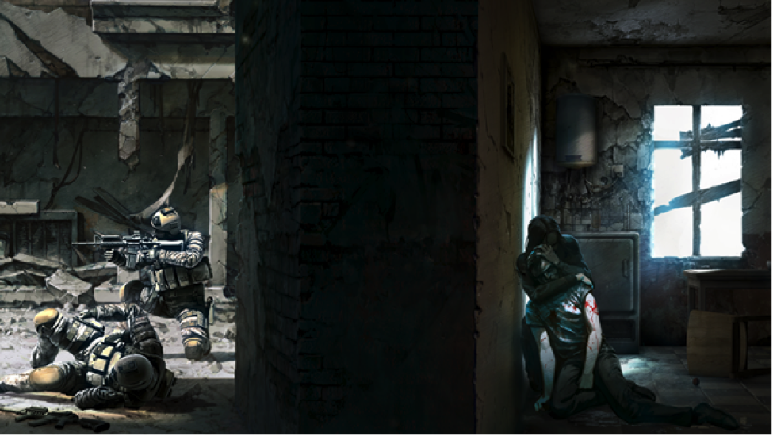

To Torture the Torturer: Videogame Violence and the Question of Humanism
Adam Lindberg
lindb045@umn.edu
UM Twin Cities, Department of English
Abstract
Whatever claims a game might make orbit the ex officio one at the heart of their design: that the game world, its powers and privileges, are ultimately for the player. The player-centric nature of video game design offers itself as analogous to anthropocentric thinking and the often uncomfortable ethical freight such thinking bears. Both depend on a persistent essentialism that grants authority, especially the authority to do violence to others, on the strength of an ontological claim. This endures despite the seemingly obvious position that claims about being human are really about being humane—possessing virtuous and ennobling characteristics—because these characteristics are understood to be uniquely available to certain individuals: a dog or a robot might express what looks like virtuous behavior but cannot be properly virtuous in quite the same way a human can. This conclusion seems misguided and calls for interrogation. This essay argues gameplay invites a rethinking of the position of the player vis-à-vis humanist values and therefore the location of the human. Reading the games in the Borderlands series, it explores how design choices typical of major game titles destabilize uncritical assumptions of humanist values as belonging to the player. This War of Mine provides a contrasting example of game that uses its mechanics to critically address similar assumptions. Together, these readings provoke reconsideration of the figure of the player and provide examples of how such engagement can benefit critiques of the ethical claims that underlie the agonistic structure of most video games.
“The question is,” said Humpty Dumpty,
“which is to be master — that's all.”
Humanism is a game, and every time you fire up a video game you are playing it. Video games are the formal apotheosis of humanism’s central conflict: the separation of the human from the animal. Super Mario is a pantomime of it, Doom its allegory, and Zelda its epic. That said, video games at once are a vehicle for and a critique of traditional humanism. In this essay, I present readings of the first two games of the Borderlands series contrasted with the independent game, This War of Mine. These readings are offered as case studies in the service of two related claims. First, that video games have special merit as sites for critiques of humanist ethics. Second, that such critiques invite a rethinking of the position of the player, which is better conceived of not as a human who operates the game but as a figure produced by the gameplay’s performance of humanism; a creature of the machine.
In the hope of ameliorating my casual use of troublesome terms like humanism, I beg your patience for a brief elaboration. By humanism, I mean the millennia-long project summarized by Giorgio Agamben in The Open: Man and Animal when he writes that, “in our culture, man has always been thought of as the articulation and conjunction of a body and a soul, of a living thing and a logos, of a natural (or animal) element and a supernatural or social or divine element” (16), and that therefore, “the anthropological machine of humanism is an ironic apparatus that verifies the absence of a nature proper to Homo, holding him suspended between a celestial and a terrestrial nature, between animal and human—and, thus, his being always less and more than himself” (29).1 This captures the troubled dualism of humanism quite nicely, but Agamben may be selling short the tendency to prefer one side over the other. I would add that humanism names the production of a preferred human ideal understood by its opposition to the animal, a term that also benefits from some unpacking.
“The animal” is a general singular construction indicating a set of characteristics (animality) that do not belong to any specific body. It is rather, as Jacques Derrida identified in “The Animal that Therefore I am (More to Follow),” a token of language used to “designate every living thing that is held not to be man (man as rational animal, man as political animal, speaking animal…)” (400). Through the invention of the animal, man marks himself as the creature unmarked by this language—who speaks over and against the one spoken—and so disavows and reduces the multiplicity of non-human experience to a single concept and category from which it is itself excluded. Put briefly, the sacrifice of “the animal” is the price of admission into human sacredness (the human animal denies its nature so as to hold itself apart from Nature). However, as the passages from Agamben indicate, the animal is a murk from which the human never quite fully emerges. Human being remains an uncomfortable supplement to animality, and human self-definition an ongoing and firstly purgative enterprise. The animal to be removed is seen as a threat to reason and civility, and human being produced and defended as its constitutive outside.
In “Rules for the Human Zoo,” Peter Sloterdijk paints a similar picture of humanism as the production of human ideals through “the taming of men” (15). He describes this project of domestication as especially urgent in times marked by, “displays of great power: whether as open warfare or raw imperial power, or in the daily degradation of human being in entertainments offered in the media;” it is within and through such conflict wherein “the label of humanism reminds us…of the constant battle for humanity that reveals itself as a contest between bestializing and taming tendencies” (15).2 Like Agamben, Sloterdijk’s humanism creates the human through a ceaseless moving away from “bestializing” habits and behaviors, however they might manifest historically.
In sum, the human values of humanism are produced through struggle against the corresponding concept of the animal. Human values are characterized by a celebration of reason and rationality, agency (self-determination), compassion, and temperance. By contrast, the animal is associated with irrationality, instinct, self-interest, and a lack of restraint. While this may seem a dated or quaint perspective in light of recent challenges to binary thinking, it has also proven powerfully enduring and widespread, and we would be remiss to ignore the terrible force of the commonplace.
The red thread running through this view of humanism is the role of mastery as a necessary corollary to the struggle toward human value. The ethical force of humanist dualism only makes sense if the human part has (or could have) the power to direct and over-master its animal counterpart. The human supposed to emerge from this display of power is at minimum self-directed and capable of virtuous expression (e.g. altruism, courageous care, honesty, etc.), in short, a recognizable approximation of humanist ideals; a lack of this power is by definition a moral deficiency. It is within the calculus of this moral struggle that video games make their intervention because they exaggerate and formalize problems of mastery, problems negotiated in each instance by the player.
And so, to restate my thesis in a bit more detail: the player-centric nature of video game design simulates anthropocentric thinking and opens space to interrogate a particular imagining of humanism through the figure of the player, an interrogation principally structured by the same human/non-human (animal) logic that underlies humanist dualism. “The player” reveals itself as an identity out of sync with the human understood by its difference from the animal. The problem of mastery that divides the human from the animal, in gameplay divides the human from itself, and amid virtuosic play the player re-enters the scene as a consciousness that is an amalgam of creature and process.3
Although “the animal” is bald reductionism, video games make use of a similar ethics of caricature made legible by attending to what is included and what excluded from the simulation. Ian Bogost stresses the importance of attending to differences between a game and what it models to the point of including it in the definition of simulation itself: “a simulation is the gap between the rule-based representation of a source system and a user’s subjectivity” (107). What is included and what left out, the opportunities for interaction, and how all of this is governed by game rules is how games make arguments and are what Bogost refers to as a game’s “procedural rhetoric” (“Persuasive Games” ix-28). With respect to the central contest of humanism, video games grant broad powers to the player to act in and upon the world (powers realized through game processes). The license to use those powers is inseparably linked to, and in most games solely determined by, the fact that the player is The Player (i.e. the human in a human/non-human dichotomy). The primary vehicle the games considered here use to engage with the humanist struggle is violence, which is both a direct expression of power as well as a metonym for power in general.
Opening the Borderlands
In the Borderlands series, the player controls a character who is a “vault hunter,” a euphemistic reference to a certain tomb raider, and who shares Lara Croft’s basic motivation: to monetize or otherwise make useful the relics of another culture.4 While other motivations emerge within both series, the colonial impulse is foundational and orients subsequent interactions. Each character has narrative, visual, and procedural components—a short backstory, a recognizable appearance, and a fixed skill tree that differs from those of the other characters.5 This last component is especially important because it communicates to those familiar with this type of game structure that characters correspond to play styles and gear preferences (e.g. Mordecai in Borderlands and Zer0 in Borderlands 2 have skills that synergize with sniper rifles and maximize a sharp-shooting/long-range combat play style).
The Borderlands games are loot-based, first-person shooters (FPS) with role-playing game (RPG) elements. Gameplay revolves around collecting rare gear (usable in-game objects that amplify character power) within a “first person” perspective, where player characters develop in response to player actions (via a levelling and skill/ability system). The narrative task of the original Borderlands is to loot the vault, but the process task is to make the characters as powerful as possible—measured by an ability to do violence—because only by accumulating power can the player access the rest of the game world and thereby the vault.6 It is a conflict-centric game whose themes and visual aesthetic riffs on and are exaggerations of 19th century frontier myths (i.e. anything not “settled” is savage and in need of settlement, etc.).
The reason why the characters are trying to get into the vault is simply to enrich themselves and as a display of their own power. Although the instructions given by the principal non-player character (NPC) “Guardian Angel” (who establishes what is required to advance the main plot) occasionally directs player violence toward quasi-altruistic ends, the core motivation never really leaves center-stage. This is an odd choice from a moral perspective (but common in games generally) because it aligns the player with a tradition of heroism exemplified by the characters of Homer’s Iliad who also pursue wealth and glory as ends in themselves. In Homer, as in Borderlands, an ability to do something is a de facto justification for doing it.7 Just as iliadic heroes cheer slaughter as the proof of might and victory, the digital spoils dispensed with flashing lights, gore, and the satisfying sounds of combat are a chorus praising the player’s power. Of course, this is just what Sloterdijk refers to when he warns against the “bestializing” and “degrading” tendencies of modern media: an opportunity to engage with direct violence that serves no purpose larger than self-aggrandizement and pleasure. Despite this, however, the game is in fact making a fairly canonical humanist argument by establishing and celebrating the power of the presumably human player to exert dominance over the non-human world; it is just doing so according to a different moral framework.
In his book Dionysus Reborn, play scholar Mihai Spariosu gives the prerational and rational mentalities as ways to understand how we act, play, and otherwise express our power and values (ix-68). The distinction between these mentalities is characterized by the privileging of individual, private, and concrete power within a prerational mentality (e.g. I steal your bike so you hit me with a brick and take it back; or, just as good: because you can, you hit me with a brick and take my bike—these are morally equivalent within a prerational mentality), and the foregrounding of social, public, and abstract power within a rational mentality (e.g. I steal your bike so you have me arrested, and the court forces me to return the bike and pay a fine).8 Both mentalities are always present but one is dominant (the rational mentality has been more or less dominant since about the time of Plato). So, the values associated with the prerational mentality are not generally recognized as the values of society without difficulty: the rational mentality must either rationalize and integrate prerational values into its own moral logic or dismiss and denigrate them. From this broader perspective, the humanist contests and negotiations that Agamben and Sloterdijk describe, and Borderlands enacts, appear contradictory because they operate in both prerational and rational modes.
Because of how progress in Borderlands works—by gathering experience points, game currency, and items—the player realizes and nurtures her power through agonistic conflict. Violence is both an expression of and the sole means to in-game power as well as the only real avenue to effect change in the fictional world. Rather than decrying violence as such, if we accept its function in the context of the game as a means to establish agency, it is incumbent upon the player (in order to be the most autonomous agent, i.e. the human in the room) to use her violence to express that agency. The spoils that result from combat are therefore both the means to greater power/agency and the symbols of its presence. As a point of comparison, games that lack character development and collectible objects (e.g. Pac-Man or Street Fighter) nonetheless adhere to a similar logic: they simply use points instead of levels and items to serve as trophies and public markers of prowess. These same trophies, in a roundabout way, also emphasize the specialness of the player’s status (read here as a marker of human exceptionalism) by indicating the way she is simultaneously in and out of the gameworld. Player characters and A.I. controlled enemies have (at minimum) a health bar whose depletion results in the character’s death. When the player kills something in the game it always generates at least some reward (i.e. experience and loot). When the player character is killed, however, the player is inconvenienced by a loss of 7% of her in-game funds (explained by the game as the cost to reconstruct the character’s body) but there is no corresponding benefit to the opponent who killed the character.9 This has two significant consequences: first, it lets the player know that her digital body is in some profound way different in nature from all the other digital bodies, reinforcing the anthropocentric belief that bodies that are other are available for use. Second, this difference compromises some of the integrity of the agon and reveals the game to be rigged in favor of a certain outcome. Rather than being a quality brought to the game by the human player, the player’s human exceptionality is discovered in the game processes as a material property of the code, which is then given to the player.
Reading the ability to wield the most effective violence as an expression of agency is problematic in Borderlands because it seems to follow that the player must also be able to choose not to be violent, which is not possible while still progressing through the game (which I address in detail below, as this persists in Borderlands 2). By enfolding the entirety of the gameworld in the sphere of direct conflict, Borderlands creates a space where the triumph of the player’s violence becomes the sole register of value legible by the world system (it is the only argument that the game, as a set of processes, can recognize and acknowledge). The conclusion of Borderlands revealed that the player had been manipulated into clearing out the vault by the Hyperion Corporation. Read according to the game’s moral logic of force, this diminishes the player’s standing by revealing their supposed agency to be subject to an external will.
Slaughter for Fun and Profit
Though the core gameplay is identical and its themes committed to the same frontier myths,10 the much more deliberate narrative investment of Borderlands 2 demands reading its violence in a very different light. Where the conflict in Borderlands was a simple measure of force against force (demonstrating the excellence of the player by their triumphs in combat), Borderlands 2 situates its conflict within a story that provides other motives for the player’s struggle.
Like most story-driven video games, Borderlands 2 is a melodrama. A simple definition of melodrama, taken from Linda Williams, is a story offering a “contrast between how things are and how they could be, or should be” (84). In terms of their moral structure, Borderlands and Borderlands 2 are opposites. Working in an essentially pre-rational mode, Borderlands establishes its values as shows of strength at the very moment of action. In contrast, and in accord with a rational mentality, Borderlands 2 builds the shape of its conflict within a frame that understands moral value as fundamentally given in advance (because it is, for the most part, in line with social values outside the game: avoid suffering, promote human flourishing, etc.).11 It is not surprising then that most melodramatic texts open with an injury that justifies the acts that follow as necessary to restore moral order.
Borderlands 2 starts with the player surviving an assassination attempt orchestrated by the game’s villain, Handsome Jack. To switch moral registers cleanly the game needs to move from personal affront to general threat, and in short order the player learns that Jack and his Hyperion Corporation are not just her would-be assassins, but are agents of oppression acting against the planet as a whole. Fascinatingly, the game focuses on Hyperion’s exploitative mining and research operations. Specifically, the player learns that Pandora is host to a valuable mineral, eridium, and that its industrial by-product, slag, has been used to cruelly mutate local wildlife (and humans as well).12 Unlike the optional bits of narrative accessible through in-game objects (which hold regional character vignettes or give extra additional depth to the playable characters), the information about Handsome Jack/Hyperion’s moral standing is part of the main story arc and so it is impossible to complete the game without encountering it. All this moral heavy lifting is supported by specific demonstrations of Jack’s wickedness: the player gets to hear a tortured mother try to trick her child into suicide by grenade in order that she might escape the worse fate of falling into Jack’s hands; she will see a beloved pet mutated and violently turn on its former owner/partner before ultimately being murdered in front of said owner—seriously, it’s pretty grisly. All told, Jack and Hyperion are condemned because they cause (and receive direct benefit from causing) terrible harm and are either indifferent to or take outright delight in the damage they inflict.
This would seem to set the stage for a pretty straightforward morality play with the player as righteous warrior against the monster that is Handsome Jack, if only the game’s processes allowed the player to realize that vision. In both Borderlands games, the player is extremely limited in terms of her ability to interact with the world. Unsurprisingly, shooting is the main activity in the FPS genre. In the Borderlands series (and nearly every FPS made after 1995) a generic “interact” action is also available, which potentially offers a staggering variety of actions. Yet most often, as is the case here, interaction other than direct conflict nonetheless remains underdeveloped.13 As a result, interactions revolve around the player’s ability to kill. If an encounter cannot be killed now, it is understood that the player should flee and return to kill it when she can.
Consider this in light of the moral framework of Borderlands 2. By binding the mechanics governing power, character growth, and therefore progress in the game to the direct application of violence, the player is compelled to conspicuously kill. She does this in order to amass the resources necessary to address the threat to the virtual world, which in the case of Handsome Jack is both clear and urgent. It is therefore rational for the player to accept the conclusion that the other virtual actors are there for her use: firmly establishing herself in the position of the human and everything else in the position of the animal.
Virtual non-humans are effectively leveled through their availability for use by the player in a way that encourages the player to be both generous and careless with her violence. The game replaces each creature slaughtered (through respawn) with one that acts identically and desires equally as the one destroyed: materializing the reduction to “the animal” discussed in the introduction. Because the moral and ecological consequence of player violence is minimized (creatures are interchangeable and infinite), the player is unencumbered by her violence. The creature that replaces a dead one is in turn made valuable only through its death, as its value rests in its ability to be consumed.
But the concentration of nominally human power on the one hand compromises agency on the other. By using random elements in its calculations, and because the time of encounters are altered by player and artificial intelligence (AI) behavior, the drop system (the algorithm determining the item(s) given when creatures are destroyed) rewards violence on a variable ratio schedule, encouraging high rates of repeated behaviors. Put briefly, the game mechanics discipline the actual body of the human player to perform acts of simulated violence efficiently and with minimal reflection. In order to progress, the player must not kill. Yet the player is incentivized and conditioned to not only attack and kill what she must in order to progress, but is encouraged by drop mechanics to go out of her way to kill everything possible in order to maximize profits. Ironically, this reproduces the crimes of the “evil” Hyperion Corporation the game went out of its way to criticize: the moral objection to Hyperion’s activities founded upon it deliberately causing, and being indifferent to, the suffering of both human and non-human creatures (who within the game’s fiction are both autonomous agents) in order to enrich itself. Where Hyperion mines Pandora, the player mines its residents: human and non-human alike. By this reasoning, when gameplay and story are brought together, the player and Hyperion are at odds not in the classic opposition of hero and villain, but are instead like two competitors vying for the largest market share of slaughter.
Borderlands 2 understands the human along the lines of morality and power, which it ultimately conflates. The logic of its melodrama compels the player to respond to an affront to humanist values, but the game mechanics require the player to reproduce if not exceed the same sins in order to mete out justice on the original sinner. Ironically, it is Handsome Jack who appears to be most aware of this contradiction by his frequent references to the player as a “bandit,” the same name given to the enemies the player killed in the original Borderlands.
In Borderlands 2, the humanist ethic is doubly compromised since it presumes both the autonomy of the moral human subject as well as its nobility. The player has no choice but to wreck bloody havoc in every area she enters as an inability to inflict enough damage renders further play impossible. Ensuring she can effectively bring her power to bear (e.g. triumph in encounters: both to “win” and to right the moral wrongs of the story) means maintaining as high a body count as possible and one made up of the right kinds of bodies—when a character’s level surpasses that of her enemies, she receives fewer experience points per kill and items drops are less powerful.14 In an algorithmic environment, rationality aligns with instrumentality. In order to sustain progress, equipment, and to occupy the position of the human, the empowered actor, the player is led from one region of the world to another by the drop mechanics. Given the quantification of value, adhering to the logic of power-seeking behavior assumes the force of necessity. As a consequence, the player’s progress across the game world is less that of a self-directed actor (in the tradition of liberal humanism) and more that of a homicidal automaton. Trained by game mechanics to perceive everything as a threat and resource and so to attack if at all possible, the player behaves nearly identically to the AI-driven creatures she fights, with the notable difference that the player is much, much better at it.
Above and beyond points and loot from kills, the player is treated to the spectacle of violence itself, which can only be described as orgiastic. All of Borderlands’ violent aesthetics are over-the-top, but an aspect of its voice acting calls for additional attention as it works outside the realm of quantifiable value. While humanism is quick to praise positive traits like its much-vaunted rationalism, it also has its own special cruelties.
Borderlands 2 makes extensive use of element-based damage: the player can set people on fire, slather them in acid, electrocute them, and so on. The game triggers the damaged enemy to intermittently react to element-typed damage with a randomly selected, but contextually relevant verbal response. On being hit with an acid weapon, for example, Psychos (an enemy type) sometimes begin soliloquizing, “O that this too too solid flesh would melt / Thaw and resolve itself into a dew” or some equally striking comment acknowledging they have been damaged in a special way. There is no effect on game states by these comments, but the lack of an in-game benefit doesn’t mean this reward fails to register. These kinds of responses are value-added violence. They are meant to be funny, and they are, but they are also a non-material reward linked to an excessive violence, and so approximate something like torture and speaks to nothing so much as the basic logic of domination that authorized the violence in the first place.
Closing the Borderlands
The human found in Borderlands is one that loves its cruelty. The shouts and pleas extracted from a virtual body announce and confirm to the player her magnificence, legible in part by her ability to destroy, but more specifically by the way in which the pain of the other exists only for her enjoyment. Borderlands is not unusual in this regard. The overwhelming majority of video games offer fantasies of power expressed through direct conflict and use audiovisual markers to communicate successful damage.
Even as the player is titillated by her ability to damage virtual bodies, those bodies—including that of the player character herself—are shown to be hollow vessels. The righteousness of the player is confirmed by the way the violence in Borderlands 2 is a kept to a battle of puppets whose pain, however exclamatory, remains illusory and light—a caricature of pain. The player gets the satisfaction of human power—the power to shape and break the lives of others—without having to confront the troubling remainder of lives that have their own histories. Though offered as a fantasy of power, this fantasy is always already on the game’s terms. That is, it isn’t a fantasy the actual player brought to the game, but one given to the player by the game system. The egotism of the video game that mirrors anthropocentric narcissism so perfectly imagines a world that is the plaything of a human creature, but in order for the human to realize that fantasy, she must be absorbed within and become subject to the processes of the game system. In the final analysis, the human is not who showed up to play the game, but an imagined consciousness buried in the code and produced by the gameplay, and it is something of a monster.
New Games for New Players: A More Critical Play
In recent years, a different kind of video game than triple-A titles like Borderlands has become increasingly possible.15 This new sensibility, and the games that are being built to satisfy it, is commonly regarded as a “critical turn” by games scholars. This transformation could just as well be framed as an ethical turn, with the new games celebrated for their willingness to deny the lightness and superficiality that marks the experience of violence in a game like Borderlands.16
While violence remains the lingua franca of the virtual world, as a way to address mature subject matter in a more nuanced way and raise the stakes of player actions, games have begun to more deeply explore what Miguel Sicart, following Rittel and Webber, calls wicked problems: problems driven by incomplete or confusing information, whose ramifications are unclear, and where compelling values are both at stake and in conflict (cf. Sicart, 32-36; Rittel and Webber, 155-169). These kinds of problems go beyond morality bars or a choice between moral rectitude and debasement and open up space in the computational environment for decisions that escape ready calculation.
One such game, released in 2014 by 11-Bit Studios, is This War of Mine (see figure 1). Unlike most war games, the central actors of this story are not soldiers but civilians caught in the conflict. Where Borderlands and, as a rule, the whole sweep of the FPS genre is committed to an ethics of the victimizer—where might, if it dressed in seemingly moral garb, is the final arbiter of any argument—This War of Mine explores the ethics of the victim, with characters kept in positions of relative powerlessness and precarity throughout the game.

Figure 1: Title art from This War is Mine symbolizes its deviation from traditional military power fantasy (the left side of the wall) to explore the experiences of war’s victims (the right side of the wall).
In a surprising and extremely effective design decision, large portions of the gameplay are reminiscent of EA Entertainment’s popular household simulator, The Sims. Like The Sims, This War of Mine is a version of a pet game where the main task is the care and feeding of semi-autonomous virtual creatures. In place of The Sims’ conspicuous consumption, the characters in This War of Mine scrabble for subsistence: patching holes in their bombed out shelter, catching rats for food, and smashing furniture into firewood to hold off the encroaching winter.
Play unfolds along two inter-related modes: home-building and scavenging. Home-building is a race against time in an environment of scarcity. Scavenging is just what it sounds like, and is an inherently risky proposition: characters can be directed to enter other areas—schools, grocery stores, etc. to find supplies, but these areas are almost always occupied. Characters must find some way to get what they need (stealth, theft, trade, violence) or go without. While one character scavenges for supplies, their shelter is subject to raids by the AI. These activities are to be read alongside each other and show the player as necessarily complicit in the very violence they are trying to escape by surviving the war (the materials scavenged mostly used to fortify their shelter against similar raiding).
In This War of Mine, the player is caretaker/director of two-to-four survivors sheltering in a dilapidated structure in the middle of a war zone.17 The player is therefore not effectively identical to the character(s) as in Borderlands, nor can she act with the fluency of a classic real-time strategy games like Starcraft. Rather, the characters of This War of Mine are managed instead of controlled; that is to say, they resist player-identification and so remain crucially separate from the player throughout gameplay.
This separation is produced by three parallel and interrelated aspects of character design—character state, the sympathy system, and character addictions—that together account for the sense of what I will call the creatureliness of this game’s characters: the sense of a more robust and complicated interiority that is not completely or comfortably determined by the player. Character state is in part physical well-being (e.g. hunger, injury status, illness, tiredness), but also involves psychological states. In response to game events, characters become depressed, they quarrel, they speak of their hopes and fears. The internal state of characters is not simply a measurement in the HUD, but appears within character behavior: injured or sick characters move more slowly, they comment on their ailments; a depressed character will stop in the middle of an assigned task and comment on their despair, requiring the player to reissue the command and so attend to the problem of the character’s interior world. If psychological health deteriorates enough, the character status becomes “broken,” at which point that person will no longer respond to direct player commands.18 This situation frequently results in the character’s death as they refuse to eat, tend wounds, or do anything remotely productive. Sometimes characters who are left in despair too long will take their own lives. Death is permanent, and one character’s death has a profound impact on other characters’ psychological states. Character state is intimately bound to the sympathy system, which is an invisible relation (the player has no way to precisely measure this status) between character and system states. For example, because Marko is injured and ill, Katia may become depressed. Similarly, while Roman may feel justified in stealing supplies from another group of refugees, Pavle may become distraught by Roman’s having done so. Lastly, many (but not all) playable characters come with addictions that will always impact the character’s state and can never be adjusted by the player. The persistence of these addictions and their independence from context reveals them as signs of the character’s personal history that endures despite circumstance. That is, they are a gamic metaphor for the continuity of identity and human irrationality. Together, these character elements lend a sense of self to the characters and makes it hard to treat them as mere constructs.
Unlike the bodies in Borderlands, which are superhumanly resilient, bodies in This War of Mine are very fragile. Health is precious, easy to lose and difficult to recover. When a character falls ill or gets injured (a certainty over the course of the game), she may need an extended period of rest to recover, during which time she is unproductive but still uses valuable resources. She moves slowly throughout the shelter, worries over her condition and is the object of concern in the conversations of the other survivors. Where bodies in traditional video games can be damaged, what is found in games like This War of Mine are bodies that hurt: that suffer in a more profoundly subjective way that calls for different assessments of the ethical status of virtual violence.
Borderlands and games like it extend the possibility of a buoyant agency: the chance to exercise power without the sticky banalities of everyday moral problems. They offer a celebration of human exceptionalism understood through a world available for human use analogous, as I’ve been arguing, to the permission man grants itself to make use of animal lives without limit. Without the labor required to maintain the ongoing deaths of actual animal bodies, the auto-production of more bodies from nothing encourages a blithe disinterest and facilitates the transformation of the thinking, playing, acting human at the controls into the unreflective, reactive, and ultimately passive creature who murders her way across the world. In This War of Mine, and the (comparatively few) games like it, the critique of humanism is actually more sinister.
This War of Mine displaces the site of the human from the player and shifts it onto the semi-autonomous creatures the player attends to. As the player becomes increasingly familiar with the rule-based interactions that constitute gameplay, she is compelled to encourage characters to be as efficient as possible with respect to the game’s winning condition: surviving the war. Interestingly enough, the characters resist. Despite the tendency of increasingly fluent players towards greater effectiveness, it is exactly the distressingly human qualities of the characters that keep interrupting and frustrating the player’s plans. Quite simply, the characters make passable humans, but lousy robots. For example, it quickly becomes evident that killing and robbing other people whenever possible, as a path towards resources, weakly dominates other strategies. The downside of this course of action is its eventually catastrophic impact on the survivors’ psychological states. In a marked deviation from the rest of the game’s design choices, which tend towards a kind of realism, the actions of each character are completely visible and immediately known to all other characters. In this way, the moral consequence of character actions uses the player’s knowledge as a conduit to the other characters. The disruption that follows, with characters expressing disgust and regret at what were extremely effective actions from a strictly instrumental perspective, forces the player to confront the moral weight of virtual violence. In other words, in direct violation of the basic logic of the history of video game play, the player is not unambiguously rewarded for mastering the game system.
What we see in This War of Mine is an understanding of human being as a fundamentally affective state. It allows an opportunity to play through, or play with, something like an ethics of the powerless, where the strictly rational decisions that a disinterested player might make to achieve the victory conditions are stymied because, to put a finer point on it, surviving is not the same as winning. By using the characters’ humanity as an obstacle to the player’s manipulation of game processes, negotiating characters’ survival through the war in a way that escapes reduction to pure process develops alongside a negotiation of the player with herself, one that invites reconsideration of the creatureliness of virtual bodies and the machine inside the creature at the keyboard, opening space to ask more carefully what it might mean to master or be mastered.
Troublesome Creatures
These case studies, like all case studies, are limited by being only somewhat generalizable and somewhat bound to the particularities of the titles. Despite the self-evident distance between these games, I found they both kept returning to some sort of questions: what is allowed by the system? what does the system allow (and encourage) me to enjoy? In other words, what is the picture of the player that takes shape through the cumulative force of the games processes and representations?
I have tried to abstain from simply passing judgment with respect to “good game, bad game” or “good human, bad human,” because of course it is not so simple. At the start of this investigation, I abandoned a question I wish to resurrect here: whether the question of human being is ultimately a hardware or a software problem. I set this aside because the question is clearly a false one; what is really at stake is what we hope it might mean to be human and how we might articulate that. Games merely afford an opportunity to model an experience. But this experience, like the human and the animal, is not an actual experience belonging to a specific body or mind, but an imagined experience for an equally imaginary player.
Gameplay is a two-way street. As Espen Aarseth writes, “The games rule us. We as players are only half ourselves when we play, the rest of us is temporarily possessed by the implied player” (133). Aarseth here invokes the implied player, which is an extremely useful concept that gathers together the sense of the player produced by the types of experiences a game makes possible. This is a valuable reminder that in the depths of immersion, the fantasy we are participating in is not necessarily our own. On the other hand, Aarseth’s comment also invites us to reflect seriously about that supposed unpossessed half. To what extent do the systems in which I live encourage the casual participation in fantasies that allow for the casual disregard of not only the virtual animal or human, but actual animal and actual human suffering? Perhaps critical reflection on the experience of organized systems like Borderlands and This War of Mine can provide tools to disrupt the processes that encourage this other possession.
Notes
1. “Our culture” needs acknowledging. My argument suffers from ethnocentrism in its western focus, and it does not make any attempt to speak to other traditions.
2. I’ll make a case for video game violence as ethically productive, though not necessarily ethically instructive. I am suspicious of the strong suggestion that Sloterdijk makes that the content of modern media is, in whole or in part, responsible for degradation of human being because this view presumes the noble human nature that Agamben finds absent (that is, we produce human nature rather than protect it).
3. By virtuosic play I mean the semi-expert play that has developed over time and is at least mostly immersive (the control apparatus is invisible because it has already been mastered by the player, rule interactions are well known, etc.). This is an important qualification, because a first time player’s experience is necessarily different from the player who has already internalized the game rules and interactions.
4. Cf. the Tomb Raider franchise 1996-present.
5. “Procedural” may be an unfamiliar modifier in this context. I use it here to refer to components that impact game processes (neither the narrative nor the character appearance do). The character classes are defined by a fixed set of abilities (“skills”) that modify rule interactions. For example, a skill might cause a percentage increase of damage with a certain weapon type under certain circumstances (i.e. +10% headshot damage with sniper rifles).
6. For the sake of being perfectly clear: narrative and process are not opposites.
7. While this oversimplifies the moral nuance of the ancient world, consider how Agamemnon flouts custom (and social welfare) by rejecting the ransom of Chryseis and in taking Briseis from Achilles despite the fallout which was pretty well understood in advance (if not in detail at least in nature).
8. Cf. Spariosu (1989) p. 6-9, for an extended summary of these concepts as they relate to: power, law, religion, consciousness, and education/knowledge.
9. As there is, for example, in Middle-Earth: Shadow of Mordor, where the creature that killed the player is promoted and so participates in some of the rewards of agonistic conflict.
10. In Borderlands 2 the new batch of entrepreneurial characters significantly arrive by rail, and the very first mission is literally saving technology from nature: the robot Claptrap is attacked by a native yeti-like creature, a Bullymong. The player kills the Bullymong and repairs the robot even though the first game firmly established that Claptrap is every bit as capricious and dangerous as any “wild” creature).
11. In other words, the moral logic of the pre-rational mentality produces tautology. The person who wins a contest is who ought to have won. In contrast, because the rational mentality assumes some abstract goods from the outset there is already an “ought” before the contest takes place (i.e. the player “ought” to win, because what she is fighting is evil).
12. Weakly framed as an explanation for non-human hostility, in fact anything non-human and undomesticated on Pandora is already hostile by default. That nothing veers from this path is a missed opportunity to present non-human actors as having complex and varied motivations, and could have better made the case (in the spirit of the moral critique of Hyperion Corp) that the aggression of Pandoran wildlife isn’t only a natural state but also a consequence of human will.
13. In the majority of FPS games, the interact button is used almost exclusively to open doors, access vehicles, or open treasure containers. This flows into the RPG genre through its use of the interact button to initiate dialogue with dialogue-enabled NPCs like quest givers. The quests themselves reinforce violence as the lingua franca of the virtual world, e.g. the prototypical quest “kill X monsters.”
14. This is a way for the designers to artificially introduce scarcity into the game’s economy of violence. The player must maintain an acceptable profit margin (measured by the power generated by rewards from kills/missions) or risk stalling or significantly slowing progress.
15. This development takes place within changes to the entertainment marketplace as well as in games (and its peripheral) industries: digital distribution, broad dissemination of creation tools, ubiquitous computing and increased network access, establishment of modding communities, development of military technologies, alternative funding mechanisms, etc.
16. Examples of games where morality is a major, or even central, element of gameplay include Spec Ops: The Line (2k Games, 2012); The Walking Dead (Telltale Games, 2012); Fable (Lionhead Studios, 2005); Mass Effect (Bioware, 2007); the Fallout series (various, 1997-present). To be fair, this trend is accompanied by a counter-movement of games that are essentially conservative in spirit with respect to traditional attitudes about the nugatory status of games.
17. The war in the game is inspired by and so cites the 1992-1996 Siege of Sarajevo.
18. The player can intervene on behalf of a “broken” character, but she must do so through another character. These interventions are not certain and so the player must risk devoting precious tine to a possible entirely ineffective task.
Works Cited
11 bit studios. This War of Mine. Deep Silver, 2014.
Aarseth, Espen. “I Fought the Law: Transgressive Play and the Implied Player.” Proceedings of
2007 DiGRA International Conference: Situated Play, 2007.
Agamben, Giorgio. The Open: Man and Animal. Translated by Kevin Attell, Stanford UP, 2004.
Bogost, Ian. Persuasive Games: The Expressive Power of Video Games. The MIT P, 2007.
---. Unit Operations: An Approach to Videogame Criticism. The MIT P, 2006.
Crystal Dynamics. Tomb Raider. Square Enix, 2013.
Derrida, Jacques. “The Animal That Therefore I Am (More to Follow).” Critical Inquiry, vol. 28,
no. 2, 2002, pp. 369-418.
Gearbox Software. Borderlands. 2K Games, 2009.
---. Borderlands 2. 2K Games, 2012.
Maxis. The Sims. Electronic Arts, 2016.
Monolith Productions. Middle-earth: Shadow of Mordor. Warner Bros. Interactive
Entertainment, 2014.
Rittle, Horst and Melvin Webber. “Dilemmas in a General Theory of Planning.” Policy Sciences,
vol. 4, 1973.
Sicart, Miguel. “Wicked Games: Designing Moral Dilemmas in Computer Games.” Design
Issues, vol. 29, no. 3, 2013, pp. 28-37.
Sloterdijk, Peter. “Rules for the Human Zoo: A Response to the Letter on Humanism.” Nicht
gerettet: Versuche nach Heidegger, 2001, pp. 302-333.
Spariosu, Mihai. Dionysus Reborn. Cornell UP, 1989.
Williams, Linda. On The Wire. Duke UP, 2014.